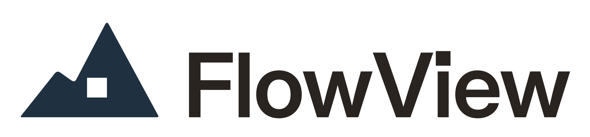
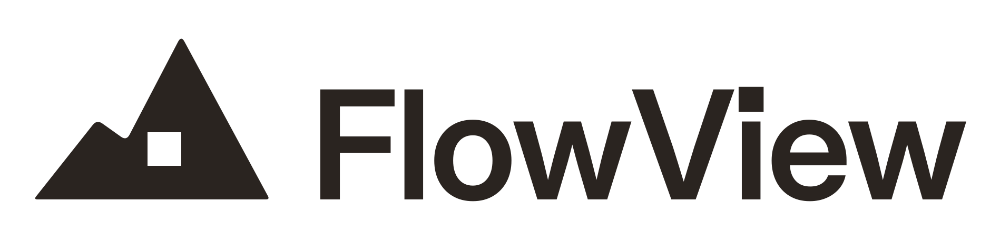
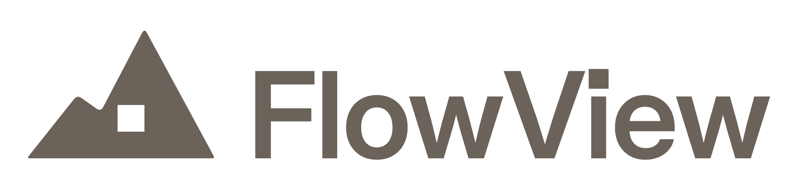
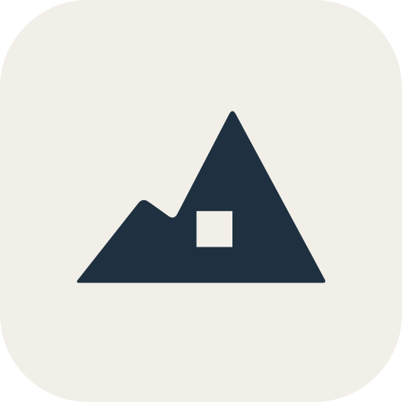
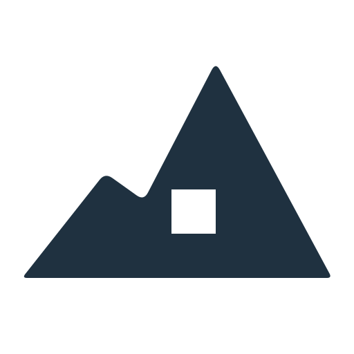
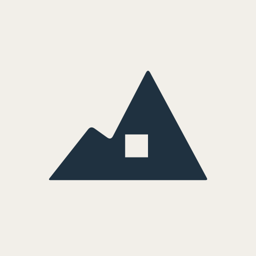

Logo v1 du 17/11/2026, piste B1. Fichiers verrouillés dans .agents/assets/logo/ : cette page les place, elle ne les redessine pas.
« Là-haut, une fenêtre est allumée : quelqu'un veille, vous pouvez dormir. »

La masse de la montagne, un seul sommet, et une fenêtre : le refuge au petit matin, quelqu'un veille. C'est l'émotion n°1 (serein) et la règle « une seule lumière » de la marque. La fenêtre est un vide dans la forme : sur fond clair, c'est la lumière du jour qui passe. Le point du « i » de View est un carré, l'écho de la fenêtre dans le nom.
La montagne est en ardoise (ce qui vient de la montagne), le nom en encre brune (ce qui vient du refuge), comme dans l'interface.

Inversé, sur fond sombre
Une couleur : encre
Une couleur : clair
Gris
Icône d'application
FlowView · Les Arcs
Même dessin à toutes les tailles. En 16 px, la fenêtre devient un point : la montagne seule reste lisible.
| Logo | Silhouette | Couleur | Ce qu'il raconte |
|---|---|---|---|
| FlowView | Montagne pleine à un sommet, une fenêtre carrée | Ardoise et encre brune | Quelqu'un veille, au calme |
| Wintics | « W » en dents de scie (trois pointes) | Violet | L'IA, la vitesse |
| Viziosense | Nom, un œil dans le « o » | Noir, bleu | La caméra |
| Safari AI | Glyphe anguleux dans un cadre | Vert vif | La start-up |
Aucun concurrent n'utilise de montagne, de forme pleine ni de couleur chaude. Logos concurrents décrits d'après leurs sites (17/11/2026), non reproduits.
.agents/assets/logo/, jamais recomposé : pas de nom retapé, pas d'autre police, pas d'autre écart entre symbole et nom.